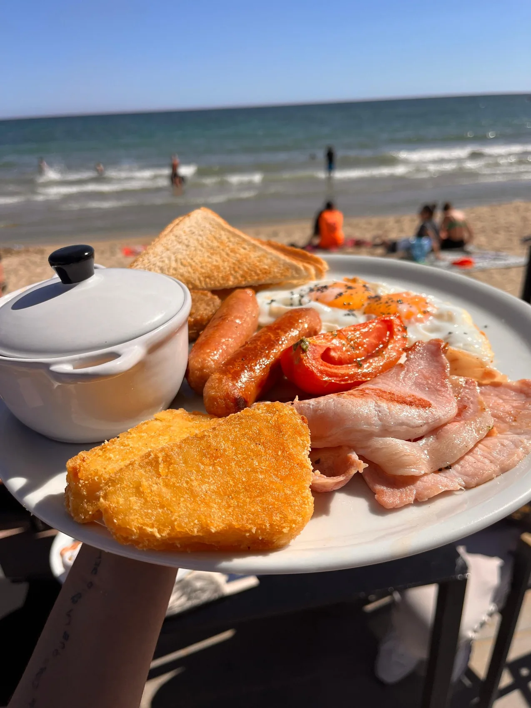
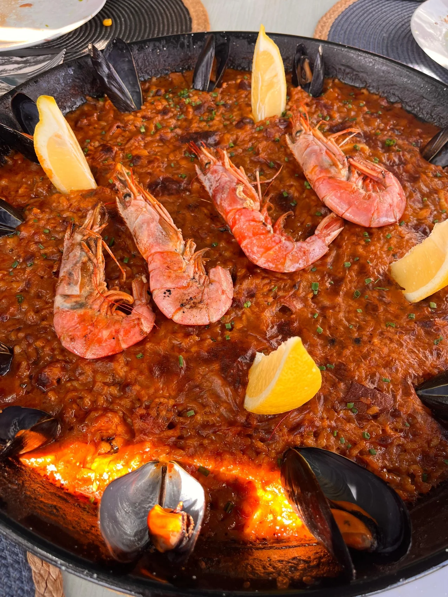
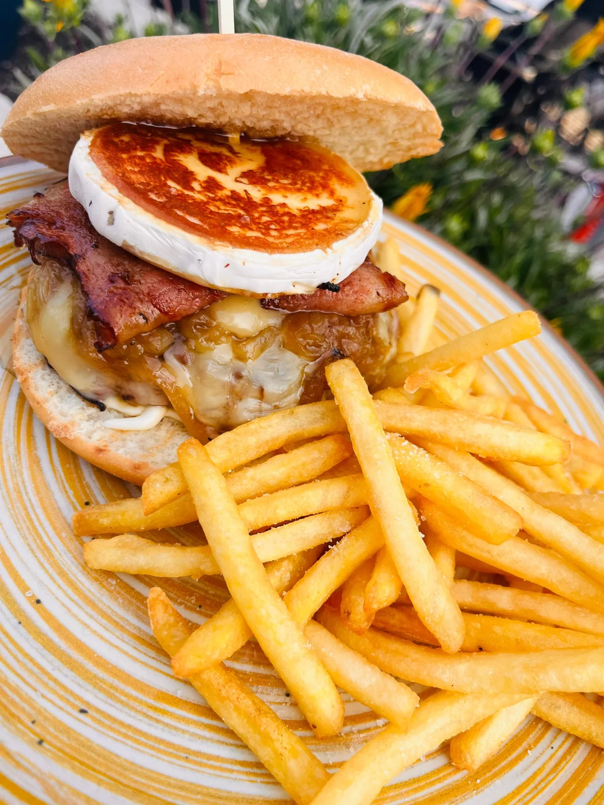
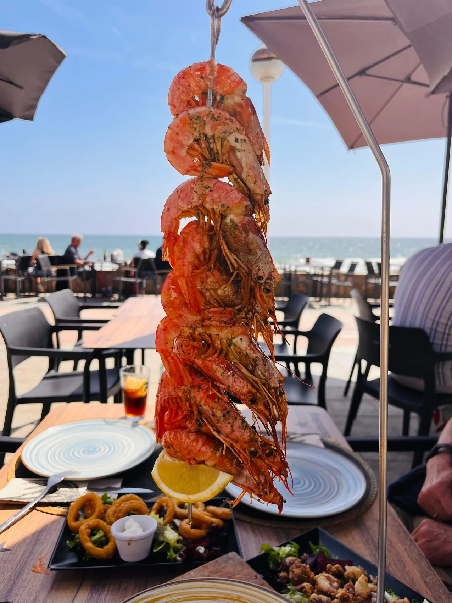
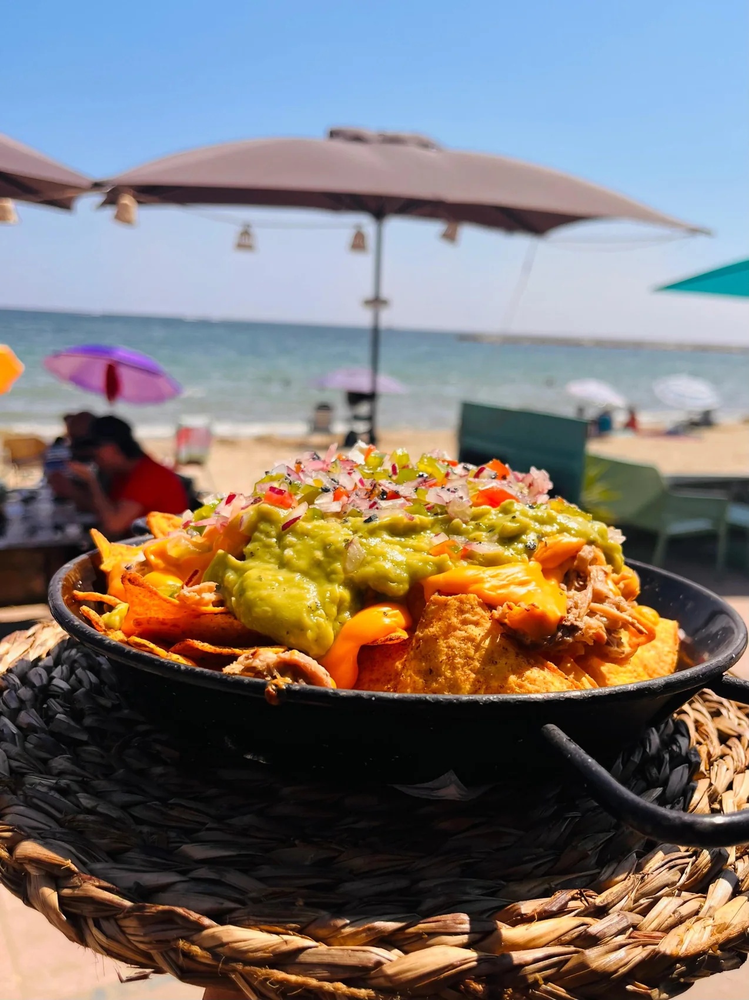
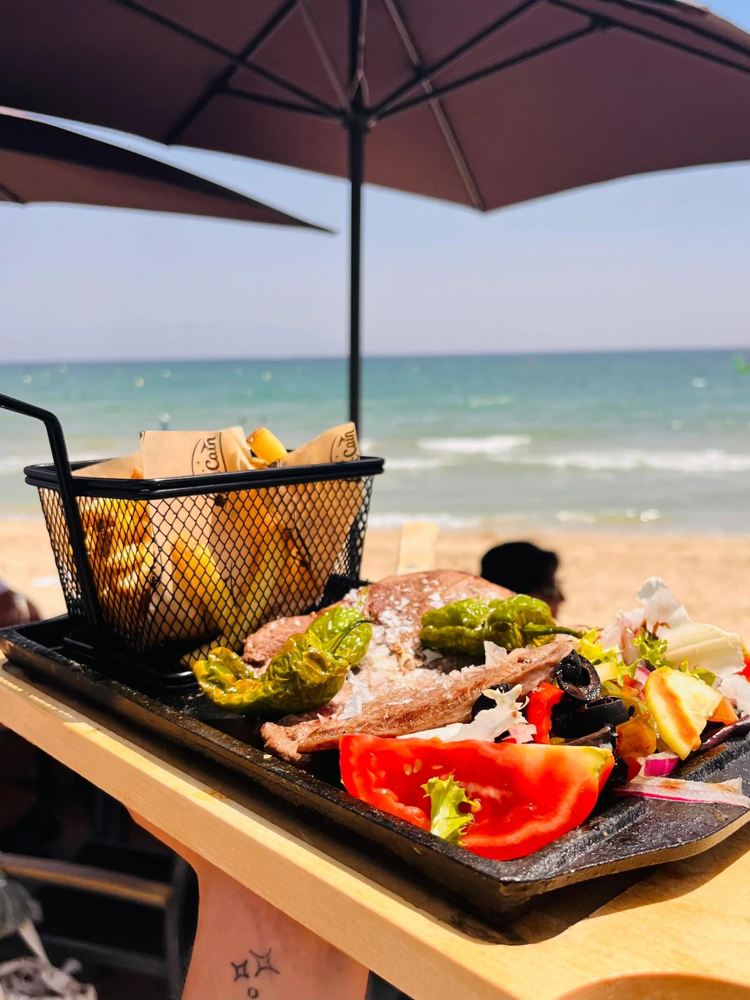
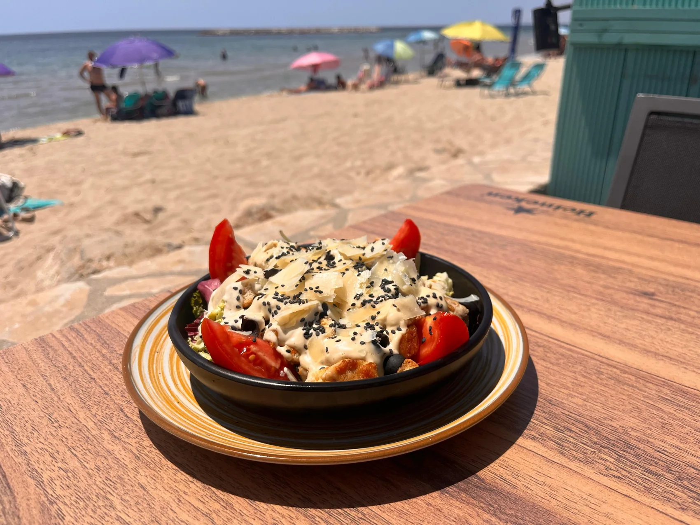
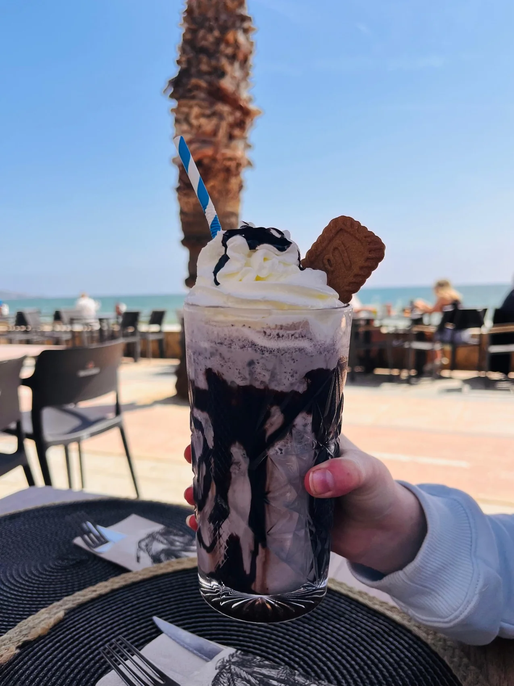
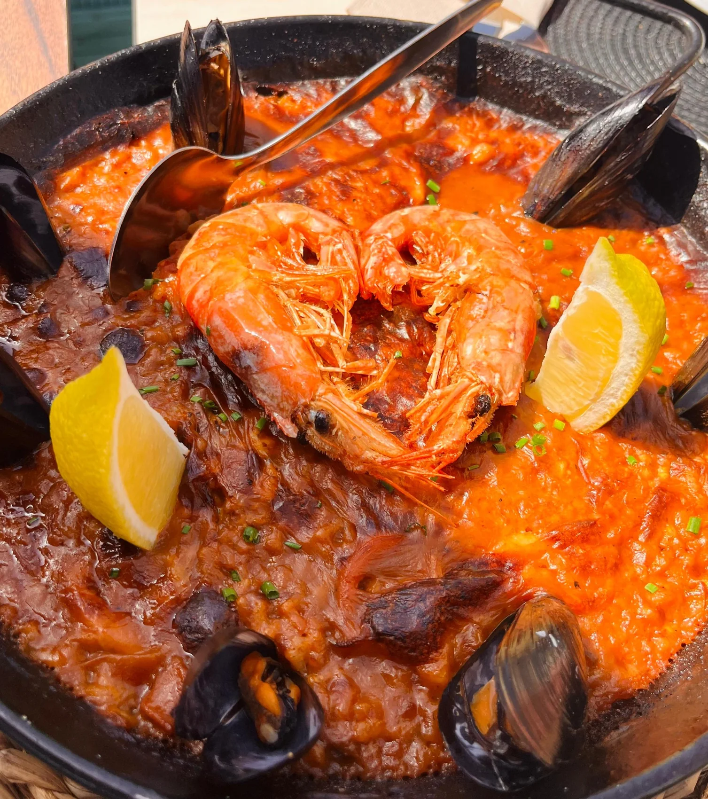

Mediterrane Aromen
direkt am Meer.
Frühstück, Paella, Burger, Fisch, Kaffee, Smoothies und Desserts direkt am Meer.
Essen. Trinken.
Das Meer genießen.
Ein Beach Bar für den ganzen Tag – vom Frühstück bis in den Abend, nur wenige Schritte vom Mittelmeer entfernt.
Wähle deinen Moment.

Frühstück
English Breakfast · Toast · Kaffee
In der Speisekarte ansehen →
Paella
Meeresfrüchte · Schwarzer Reis · Hähnchen & Meeresfrüchte
In der Speisekarte ansehen →
Burger
Best Seller · Pulled Pork · Chicken Crispy
In der Speisekarte ansehen →
Fisch & Meeresfrüchte
Sepia · Dorade · Oktopus · Muscheln
In der Speisekarte ansehen →
Tapas & Vorspeisen
Nachos · Bravas · Calamari · Tequeños
In der Speisekarte ansehen →
Fleisch
Steak · Entrecôte · Ribs · Schnitzel
In der Speisekarte ansehen →
Salate
Caesar · Burrata · Cajun · Ziegenkäse
In der Speisekarte ansehen →
Kaffee & Desserts
Kaffee · Eis · Crêpes · Desserts
In der Speisekarte ansehen →Der Geschmack des Mittelmeers.
Meeresfrüchte-Paella, schwarzer Reis, Hähnchen & Meeresfrüchte oder Rosas Geheimrezept.

Vom Frühstück
bis zum Sonnenuntergang.
Guten Morgen
English Breakfast, Toast und Kaffee.
Strandmodus
Sandwiches, Salate und Smoothies.
Mittagessen am Meer
Paella, Fisch, Fleisch und Tapas.
Etwas Süßes
Eis, Desserts, Milkshakes und Kaffee.
Abendessen & gute Stimmung
Burger, Tapas, Paella und Gerichte zum Teilen.
Tisch reservieren.
Dein Tisch am Meer ist nur wenige Klicks entfernt.
Prüfe die Bestätigung in deiner E-Mail.